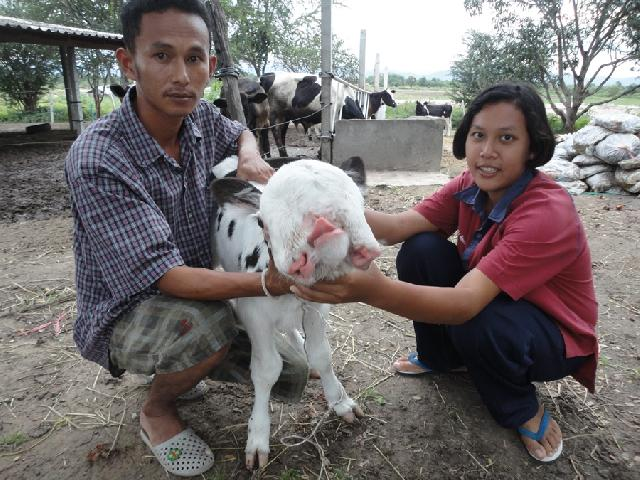

|
|
» Home » Isaan Dialect - Introduction to the dialect spoken by approximately 1/3 of Thailand's people. » Thai Particles - Explanation of Thai language particles with examples. » Loi Gratong Festival - Thailand's magical floating basket festival. » Same Same - Why do Thais say same same instead of just same? » Space Invaders - Play Space Invaders game online in your browser using Flash plugin - SANUK MAHK! » Thai Videos - Traditional Thai dancing videos. » Thai News Stories - English translations of Thai news stories. » Visitors' Guestbook - Leave a comment. |
Excitement at 'Richie' the Amazing Calf Born with 3 Eyes and 2 Noses

ฮือฮา "มารวย" ลูกวัวประหลาดมี 3 ตา 2 จมูก
1 ก.ค.จ.ประจวบคีรีขันธ์ นางสงวน จ้อยวงศ์ อายุ49 ปี เจ้าของฟาร์มโคมนม หมู่ 4 บ้านไร่โค้ง ต.อ่าวน้อย อ.เมืองประจวบคีรีขันธ์ เปิดเผยว่า ตนเองประกอบอาชีพทำฟาร์มเลี้ยงโคนมซึ่งมีกว่า 50 ตัว Please send any comments and corrections here. Page last updated Dec 2016. This site is © Copyright Boo Boo 2003-2016. All Rights Reserved. 
Counter |